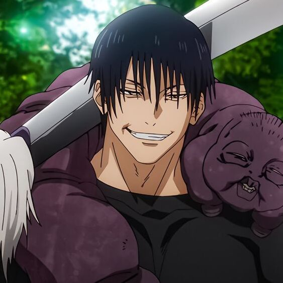
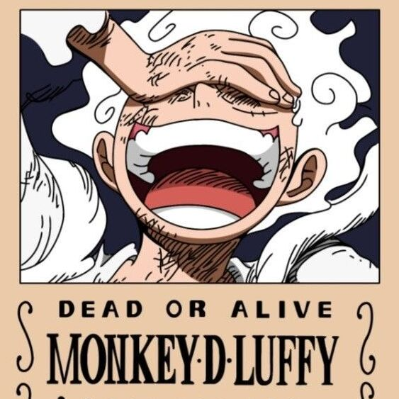

Sung Jinwoo: The Shadow Monarch
Type: Manwha/Anime
Ronan Urot
Sung Jinwoo is the main protagonist of the Solo Leveling series. He is the oldest child of Sung Il-Hwan and Park Kyung-Hye, being the older brother of Sung Jin-Ah. Originally an infamously weak E-Rank Hunter, he got the chance of a lifetime when he was selected as the Player of the System, giving him the unique ability to grow in strength without restraint.

Toji Fushiguro: The Sorcerer Killer
Type: Anime/Manga
Keith Raganas
Toji Fushiguro is a character in the Jujutsu Kaisen series. He is a former member of the Zenin family and an infamous assassin known as the Sorcerer Killer. He was contracted by the Time Vessel Association among other groups throughout his time as a non-curse user.

Luffy’s 5th Gear: The Warrior of Liberation
Type: Anime/Manga
Charles Villena
Luffy’s 5th Gear is a transformation that he achieved during the Wano Country arc. It is his strongest transformation yet, and he calls himself the “Warrior of Liberation” in this state. Unlike his previous gears, Luffy’s 5th Gear is not based on his rubbery properties. Instead, it is based on the true nature of his Devil Fruit, the Hito Hito no Mi, Model: Nika. In this form, Luffy gains a completely white transformation and takes on an appearance similar to that of the “Sun God” Nika. Luffy’s eyebrows also resemble those of Sanji in this form.

Zeref Dragneel: The Strongest Dark Wizard
Type: Anime/Manga
Leester Cruspero
Zeref Dragneel is a character in the Fairy Tail series. He is considered to be the strongest and most evil mage of all time, possessing extremely dangerous and powerful magic. Zeref is the founder and former emperor of the Alvarez Empire, under the alias of Emperor Spriggan.

Iwatani Naofumi: The Shield Hero
Type: Anime/Manga
John Lloyd Siarot
In the realm of isekai anime, the journey of the Shield Hero, Iwatani Naofumi, stands as a testament to resilience, growth, and the complexities of heroism. From a reluctant protagonist to a symbol of unwavering determination, Naofumi's evolution captivates audiences globally. Let's delve into the depths of his character, exploring the facets that make him an emblematic figure in anime lore.

Eren Yeager: The Titan Shifter
Type: Anime/Manga
Rhod Vincent Dejito
Eren Yeager, the central figure of Hajime Isayama's masterpiece, "Attack on Titan," is a character that embodies complexity, evolution, and controversy. As we traverse the saga of titans, humanity's struggles, and the intertwined destinies of characters, Eren's journey stands as a focal point, capturing the essence of human determination, sacrifice, and the ambiguity of morality.